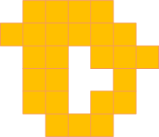
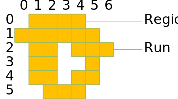

Regions
Documentation for Regions.
Regions.jl defines a set of types and functions that model a discrete 2-dimensional region concept.

In order to use the types and functions defined in the Regions package, you must first install it with the package manager and then make it known to your module:
julia> using Pkg
julia> using Pkg.add(path="D:/!julia/Regions")julia> using RegionsRegions can be used for various purposes in machine vision and image processing. Since they provide an efficient run-length encoding of binary images, they avoid the need to touch every pixel when doing binary morphology and thus enable substantial speedup of such operations. Regions are also the basis for binary blob analysis, where the calculation of shape-based features is also substantially accelerated because of the run-length encoding. Finally, regions can be used as the domain of image processing functions.
Introduction
A region can be seen as a set of discrete coordinates in the cartesian plane. In fact, one of the main motivations for the region concept was to model a set of pixel locations for image processing purposes.
A region is represented with a sorted list of horizontal runs. Runs themselves are represented with a horizontal columns range and a vertical row coordinate.

Here is how this region can be created using the Julia REPL (assuming the origin (0, 0) is at the upper left):
julia> Region([Run(0, 1:4), Run(1, 0:5), Run(2, 1:2), Run(2, 4:6), Run(3, 1:2), Run(3, 5:5), Run(4, 1:2), Run(4, 4:5), Run(5, 2:4)])
Region(Run[Run(0, 1:4), Run(1, 0:5), Run(2, 1:2), Run(2, 4:6), Run(3, 1:2), Run(3, 5:5), Run(4, 1:2), Run(4, 4:5), Run(5, 2:4)], false)Range
The most basic building block of a region is a range. The UnitRange{Int64} is a suitable type and can be written like this:
julia> 0:99
0:99
julia> (0:99).start
0
julia> (0:99).stop
99
julia> length(0:99)
100
julia> length(-50:50)
101A range where the stop is less than the start is considered empty.
julia> isempty(0:0)
false
julia> isempty(1:0)
trueThe natural sort order of ranges is to sort them by their start.
julia> 0:100 < 1:101
true
julia> 0:1 < 1:100
true
julia> 0:50 < 0:100
true
julia> isless(0:100, 1:101)
trueInversion mirrors a range at the origin.
julia> invert(0:100)
-100:0
julia> invert(invert(5:10))
5:10Translation moves a range by an offset.
julia> translate(0:100, 50)
50:150
julia> (10:20) + 30
40:50
julia> 10 + (20:30)
30:40
julia> (50:100) - 10
40:90You can check whether a value is contained in a range.
julia> contains(10:20, 10)
true
julia> contains(10:20, 15)
true
julia> contains(10:20, 20)
true
julia> contains(10:20, 9)
false
julia> 14 ∈ 10:20
trueTwo ranges can overlap or touch.
julia> isoverlapping(10:20, 5:25)
true
julia> isoverlapping(0:0, 1:1)
false
julia> istouching(0:0, 1:1)
true
julia> istouching(0:0, 2:2)
falseRun
A run combines a vertical row coordinate with a range of horizontal columns coordinates.
An empty run is a run whose columns range is empty.
julia> isempty(Run(0, 0:-1))
true
julia> isempty(Run(0, 0:100))
falseThe natural sort order of runs is to sort them by their row, then by their columns range.
julia> Run(0, 0:100) < Run(1, 0:100)
true
julia> Run(0, 0:100) < Run(0, 1:101)
trueInversion mirrors a run at the origin.
julia> invert(Run(10, 50:100))
Run(-10, -100:-50)
julia> invert(invert(Run(1, 5:10)))
Run(1, 5:10)Translation moves a run by horizontal and vertical offsets.
julia> translate(Run(0, 0:100), 10, 20)
Run(20, 10:110)
julia> Run(0, 10:20) + [30, 40]
Run(40, 40:50)
julia> Run(0, 10:20) - [30, 40]
Run(-40, -20:-10)Region
A region is a subset of the discrete two-dimensional space. It represents a set (in the sense of mathematical set theory) of discrete coordinates. A region may be finite or infinite. A region may not be connected and it may contain holes.
Regions are an essential concept in computer vision and are useful in many respects.
Regions are not necessarily related to images; they can exist independently and without images. In addition, the coordinate space is not confined to the bounds of an image, and regions can extend into the quadrants with negative coordinates in the two-dimensional space.
Contents
Reference
Regions.Regions — ModuleRegionsMain module for Regions.jl - a set of types that model a discrete 2-dimensional region concept.
Exports
- Run
- Region
Regions.Region — TypeRegionA region is a discrete set of coordinates in two-dimensional euclidean space.
Regions.Run — TypeRunA run is a (possibly partial) set of consecutive coordinates within a row of a region. It consists of a discrete row coordinate (of type Signed) and a range of discrete column coordinates (of type UnitRange{Int64}).
Runs specify a sort order: one run is smaller than the other if it starts before the other run modeling the coordinates from left to right and top to bottom.
Base.:== — Method==(a::Region, b::Region)Equality operator for two regions. Two regions are equal, if both their runs and their complement flags are equal.
Base.contains — Methodcontains(r::Region, x::Integer, y::Integer)
contains(r::Region, a::Array{Int64, 1})Test if region r contains position (x, y).
Base.contains — Methodcontains(r::Run, x::Integer, y::Integer)
contains(r::Run, a::Array{Int64, 1})Test if run r contains position (x, y).
Base.contains — Methodcontains(x::UnitRange{Int64}, y::Integer)Test if range x contains value x.
In addition to the contains method, you can also use the ∈ operator.
julia> using Regions
julia> contains(0:10, 5)
true
julia> contains(0:10, 15)
false
julia> 0 ∈ 0:10
true
julia> 100 ∈ 0:10
falseBase.copy — Methodcopy(x::Region)Create a copy of a region.
Base.isempty — Methodisempty(x::Run)Discover whether the run is empty.
julia> using Regions
julia> isempty(Run(1, 1:10))
false
julia> isempty(Run(2, 1:1))
false
julia> isempty(Run(3, 1:0))
trueBase.isless — Methodisless(x::Run, y::Run)Compare two runs according to their natural sort order. First, their rows are compared, and if they are equal, their column ranges are compared.
julia> using Regions
julia> isless(Run(0, 1:10), Run(1, 0:10))
true
julia> isless(Run(1, 1:10), Run(1, 2:10))
trueBase.union — Methodunion(a::Region, b::Region)Calculates the union of two regions. This function supports complement regions and uses DeMorgan's rules to eliminate the complement.
Base.union — Methodunion(a::Array{Run,1}, b::Array{Run,1})Calculates the union of two sorted arrays of runs. The function assumes that the runs are sorted but does not check this.
Regions.closing — Methodclosing(a::Region, b::Region)Closing is implemented by a dilation followed by a minkowski subtraction. The structuring element should be a region that is centered on the origin. Gaps and holes smaller than the structuring element are closed and the region boundaries are smoothed.
Regions.complement — Methodcomplement(x::Region)Calculates the set-theoretic complement of a region.
Regions.difference — Methoddifference(a::Region, b::Region)Calculates the union of two regions. This function supports complement regions and uses DeMorgan's rules to eliminate the complement.
Regions.difference — Methoddifference(a::Array{Run,1}, b::Array{Run,1})Calculates the difference of two sorted arrays of runs. The function assumes that the runs are sorted but does not check this.
Regions.dilation — Methoddilation(a::Region, b::Region)Dilation of a with structuring element b. Both the region a and the structuring element b are regions. The structuring element should be a region that is centered on the origin. This function partially supports complement regions and uses DeMorgan's rules to eliminate the complement.
Regions.dilation — Methoddilation(a::Array{Run,1}, b::Array{Run,1})Dilation of a with structuring element b. The function assumes that the runs are sorted but does not check this.
Regions.erosion — Methoderosion(a::Region, b::Region)Erosion of a with structuring element b. Both the region a and the structuring element b are regions. The structuring element should be a region that is centered on the origin. This function partially supports complement regions and uses DeMorgan's rules to eliminate the complement.
Regions.erosion — Methoderosion(a::Array{Run,1}, b::Array{Run,1})Erosion of a with structuring element b. The function assumes that the runs are sorted but does not check this.
Regions.intersection — Methodintersection(a::Region, b::Region)Calculates the intersection of two regions. This function supports complement regions and uses DeMorgan's rules to eliminate the complement.
Regions.intersection — Methodintersection(a::Array{Run,1}, b::Array{Run,1})Calculates the intersection of two sorted arrays of runs. The function assumes that the runs are sorted but does not check this.
Regions.invert — Methodinvert(x::Region)Invert a region. Inversion mirrors a region at the origin. A region is inverted by inverting each of its runs.
Regions.invert — Methodinvert(x::Run)Invert a run. Inversions mirrors a run at the origin. A run is inverted by negating its row and inverting its columns.
In addition to the invert method, you can also use the unary - operator.
julia> using Regions
julia> invert(Run(1, 20:30))
Run(-1, -30:-20)
julia> -Run(-1, -30:-20)
Run(1, 20:30)Regions.invert — Methodinvert(x::UnitRange{Int64})Inverts a range. Inversion mirrors a range at the origin. A range is inverted by reversing and inverting each of its coordinates.
julia> using Regions
julia> invert(5:10)
-10:-5
julia> invert(invert(0:100))
0:100Regions.isclose — Methodisclose(x::Run, y::Run, distance::Integer)Test if two runs are close.
If distance == 0 this is the same as isoverlapping(). If distance == 1 this is the same as istouching(). If distance > 1 this is testing of closeness.
Regions.isclose — Methodisclose(::UnitRange{Int64}x, ::UnitRange{Int64}y, distance::Integer)Test if two ranges are close.
If distance == 0 this is the same as isoverlapping(). If distance == 1 this is the same as istouching(). If distance > 1 this is testing of closeness.
Regions.isoverlapping — Methodisoverlapping(x::Run, y::Run)Test if two runs overlap.
Regions.isoverlapping — Methodisoverlapping(x::UnitRange{Int64}, y::UnitRange{Int64})Test if two ranges overlap.
julia> using Regions
julia> isoverlapping(0:10, 5:15)
true
julia> isoverlapping(0:10, 20:30)
falseRegions.istouching — Methodistouching(x::Run, y::Run)Test if two runs touch.
Regions.istouching — Methodistouching(x::UnitRange{Int64}, y::UnitRange{Int64})Test if two ranges touch.
julia> using Regions
julia> istouching(0:10, 11:21)
true
julia> istouching(0:10, 12:22)
falseRegions.merge — Methodmerge(a::Array{Run,1}, b::Array{Run,1})Merge sorted vectors a and b. Assumes that a and b are sorted and does not check whether a or b are sorted.
Regions.minkowski_addition — Methodminkowski_addition(a::Region, b::Region)Minkowski addition of a with structuring element b. Both the region a and the structuring element b are regions. The structuring element should be a region that is centered on the origin. This function partially supports complement regions and uses DeMorgan's rules to eliminate the complement.
Regions.minkowski_addition — Methodminkowski_addition(x::Run, y::Run)Minkowski addition for two runs.
This is a building block for region-based morphology. It avoids touching each item of a range and calculates the result only by manipulating the range ends.
Regions.minkowski_addition — Methodminkowski_addition(a::Array{Run,1}, b::Array{Run,1})Minkowski addition of two sorted arrays of runs. The function assumes that the runs are sorted but does not check this.
Regions.minkowski_subtraction — Methodminkowski_subtraction(a::Region, b::Region)Minkowski subtraction of a with structuring element b. Both the region a and the structuring element b are regions. The structuring element should be a region that is centered on the origin. This function partially supports complement regions and uses DeMorgan's rules to eliminate the complement.
Regions.minkowski_subtraction — Methodminkowski_subtraction(x::Run, y::Run)Minkowski subtraction for two runs.
This is a building block for region-based morphology. It avoids touching each item of a range and calculates the result only by manipulating the range ends.
Regions.minkowski_subtraction — Methodminkowski_subtraction(a::Array{Run,1}, b::Array{Run,1})Minkowski subtraction of two sorted arrays of runs. The function assumes that the runs are sorted but does not check this.
Regions.morphgradient — Methodmorphgradient(a::Region, b::Region)The morphological gradient is calculated by taking the difference of the dilated region and the eroded region. The structuring element should be a region that is centered on the origin.
Regions.opening — Methodopening(a::Region, b::Region)Opening is implemented by an erosion followed by a minkowski addition. The structuring element should be a region that is centered on the origin. Structures smaller than the structuring element are removed and the region boundaries are smoothed.
Regions.sort! — Methodsort!(a::Array{Run, 1})Sort the vector a in place. This ensures that runs are sorted after an operation that might have destroyed the sort order, such as downsampling.
Regions.sort — Methodsort(a::Array{Run, 1})Variant of sort that returns a sorted copy of a leaving a itself unmodified. This ensures that runs are sorted after an operation that might have destroyed the sort order, such as downsampling.
Regions.translate — Methodtranslate(r::Region, x::Integer, y::Integer)
translate(r::Region, a::Array{Int64, 1})Translate a region. Translation moves a region. A region is translated by translating each of it's runs.
Regions.translate — Methodtranslate(r::Run, x::Integer, y::Integer)
translate(r::Run, a::Array{Int64, 1})Translate a run. Translation moves a run. A run is translated by adding offsets to its row and columns.
In addition to the translate method, you can also use the + or - operators to translate a run.
julia> using Regions
julia> translate(Run(1, 20:30), 10, 20)
Run(21, 30:40)
julia> translate(Run(1, 2:3), [10, 20])
Run(21, 12:13)
julia> Run(1, 2:3) + [10, 20]
Run(21, 12:13)
julia> [1, 2] + Run(0, 0:10)
Run(2, 1:11)
julia> Run(0, 0:100) - [5, 25]
Run(-25, -5:95)Regions.translate — Methodtranslate(x::UnitRange{Int64}, y::Integer)Translate a range. Translation moves a range. A range is translated by adding an offset to each of its coordinates.
In addition to the translate method, you can also use the + or - operators to translate a range.
julia> using Regions
julia> translate(0:10, 5)
5:15
julia> (5:15) + 10
15:25
julia> 10 + (5:15)
15:25
julia> (5:15) - 10
-5:5Index
Regions.RegionsRegions.RegionRegions.RunBase.:==Base.containsBase.containsBase.containsBase.copyBase.isemptyBase.islessBase.unionBase.unionRegions.closingRegions.complementRegions.differenceRegions.differenceRegions.dilationRegions.dilationRegions.erosionRegions.erosionRegions.intersectionRegions.intersectionRegions.invertRegions.invertRegions.invertRegions.iscloseRegions.iscloseRegions.isoverlappingRegions.isoverlappingRegions.istouchingRegions.istouchingRegions.mergeRegions.minkowski_additionRegions.minkowski_additionRegions.minkowski_additionRegions.minkowski_subtractionRegions.minkowski_subtractionRegions.minkowski_subtractionRegions.morphgradientRegions.openingRegions.sortRegions.sort!Regions.translateRegions.translateRegions.translate
- GhaliSherif Ghali, Introduction to Geometric Computing, Springer 2008